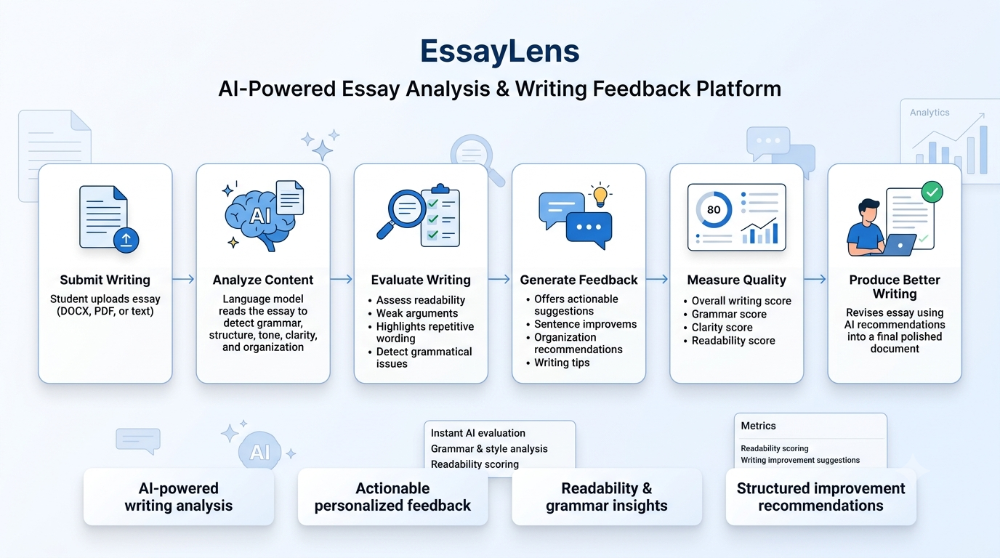
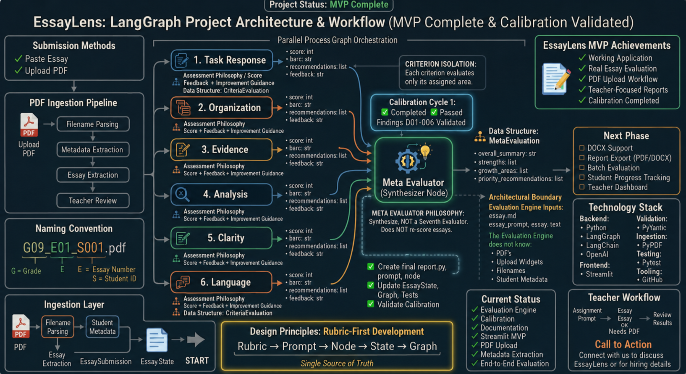

AI-powered essay analysis and writing feedback platform
Providing meaningful feedback on student writing is one of the most time-intensive responsibilities for educators. Consistent grading, constructive comments, and individualized recommendations require significant effort, making it difficult to deliver timely feedback for every student.
EssayLens analyzes student essays using AI and evaluates writing against well-defined assessment rubrics. The platform generates detailed feedback, highlights strengths and areas for improvement, and provides actionable recommendations that help students become stronger writers while supporting educators in their evaluation process.

Students upload an essay, which is analyzed by large language models using structured evaluation criteria. EssayLens assesses writing quality, identifies opportunities for improvement, and returns personalized feedback alongside rubric-based scoring.
Evaluation rubrics were developed using guidance and grading criteria provided by experienced teachers who regularly assess student essays, helping produce feedback that aligns with real classroom expectations.
Provides detailed recommendations on grammar, organization, clarity, evidence, and writing style to help students understand how to improve future drafts.
The current implementation is optimized for high school essays. By replacing or expanding the evaluation rubrics, the platform can be adapted to support college- and university-level writing standards.

The platform combines document processing, prompt engineering, rubric-driven evaluation, large language models, and cloud infrastructure to produce consistent essay analysis and structured feedback in seconds.
Claude • GPT APIs • Python • Prompt Engineering • AWS
Unlike generic AI writing assistants, EssayLens evaluates essays using structured rubrics inspired by real educator practices. Because the assessment criteria are configurable, institutions can tailor the platform to different grade levels, curricula, or academic disciplines without changing the core AI workflow.
The live demonstration uses commercial large language model APIs and is available in a controlled environment to manage operational costs while demonstrating the platform's full capabilities.